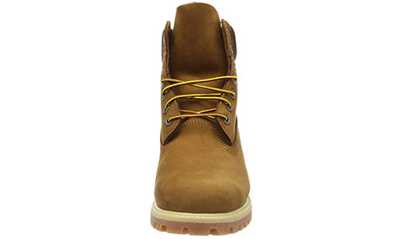
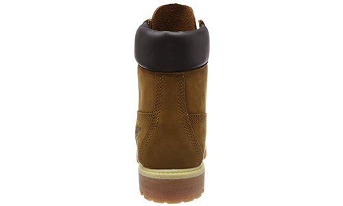
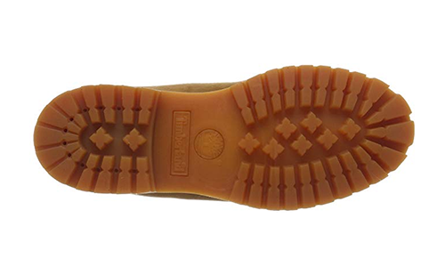
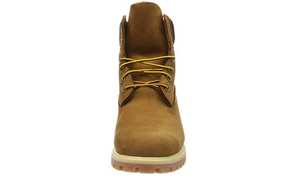
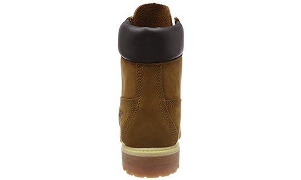
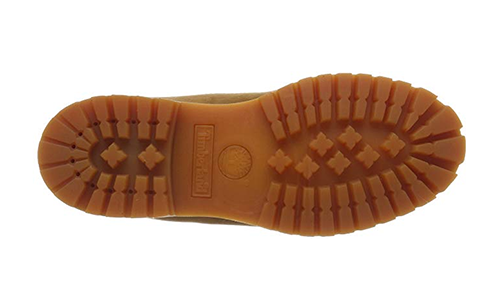

COD.HBOT1
- Parte superior de cuero Nobuk para la comodidad, durabilidad y larga duración
- Revestimiento: Cuero
- Bastidor selladas, construcción resistente al agua mantiene los pies secos en cualquier clima
- La tecnología antifatiga comfort ofrece apoyo y comodidad todo el día
- Poste de goma suela exterior para durabilidad y tracción
- Cordones con fibras Taslan para el desgaste duradero
- Forro de piel para una comodidad óptima
 




